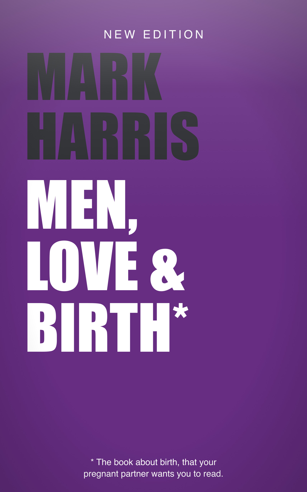
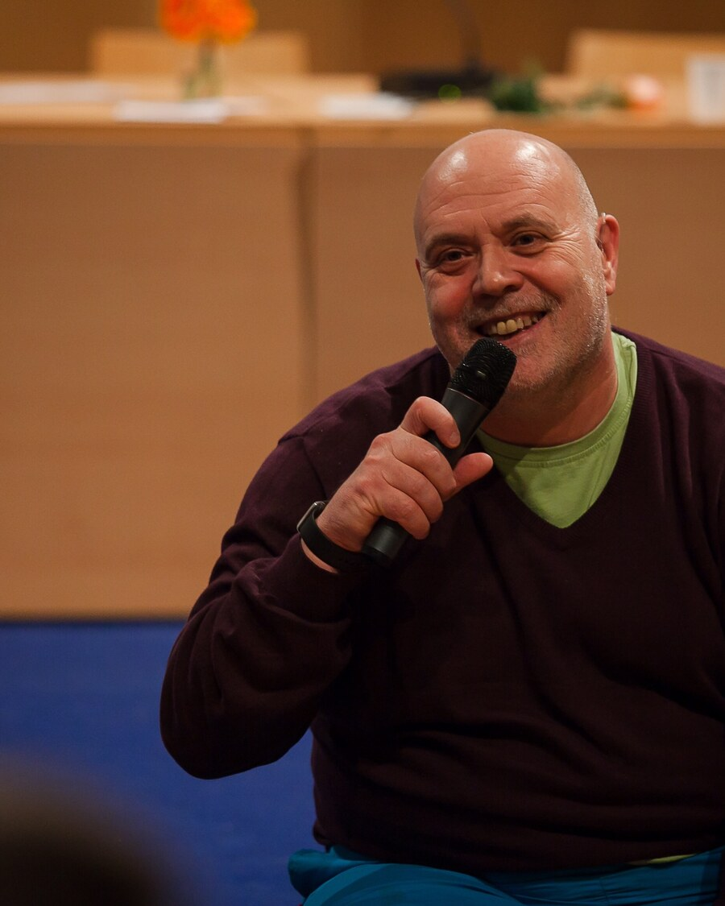
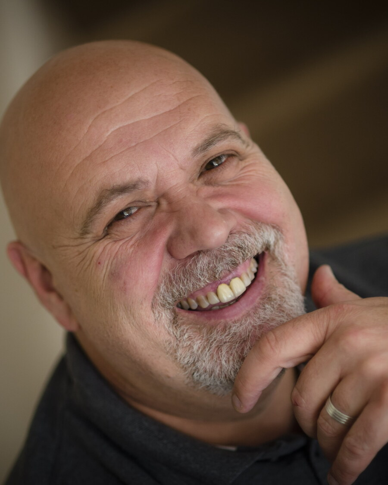
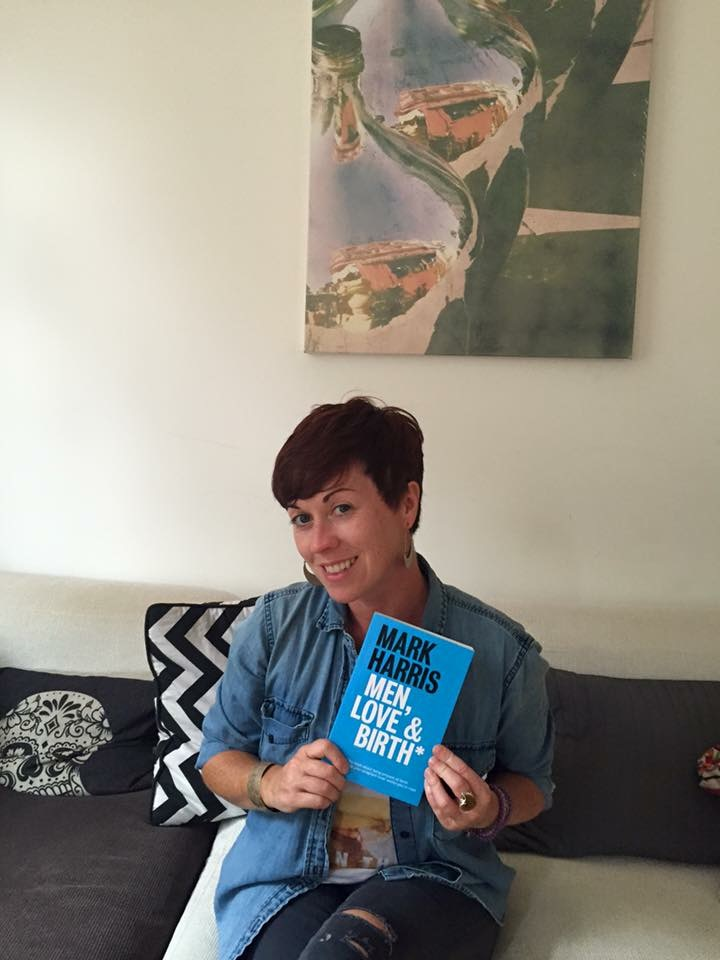
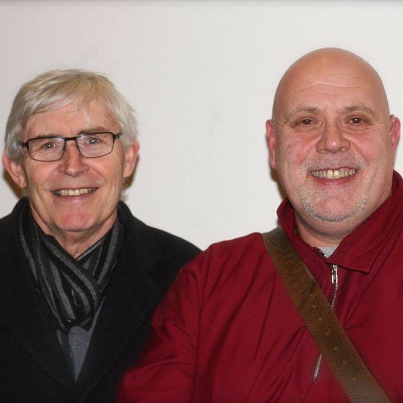
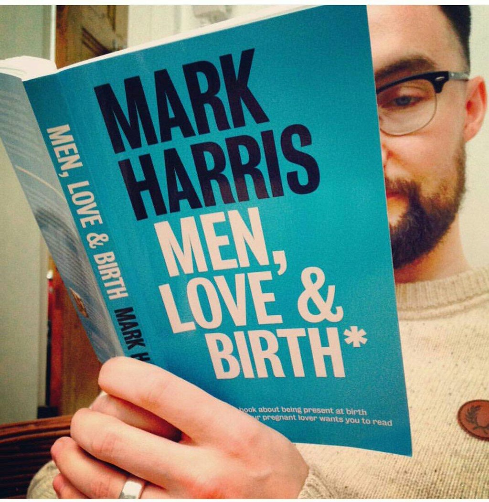
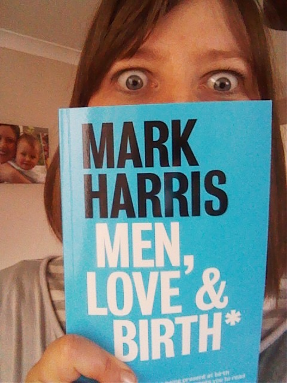

Mark Harris is available for interviews and expert commentary on men, partners and birth — including caesarean and instrumental birth, birth trauma in men, and maternity advocacy.
Email the press officeInterviews, expert commentary and review copies on request. Mark is available for radio, podcast and TV — by phone, remote or in studio, and flexible on timing.
Review copies: a print PDF (and ePUB for e-readers) available on request.
This is the second edition — eleven years on, and a bigger book. First published in 2015, the birth room has changed: the caesarean rate has climbed, and the man standing in it has never mattered more.
Same voice as the first edition — warm, funny, unflinchingly direct. Written for the birth room as it is now, not as it was.
Mark Harris is a trained midwife with thirty years in birth work — a midwife since 1993 — and the founder of Birthing 4 Blokes, through which he has spent his career teaching men to be real partners in the birth room. He created and trains the Birthing Awareness 3-Step process, and is an NLP trainer and a clinical hypnotherapist.
He wrote Men, Love & Birth because he has seen too many partners stand at the edge of the room, desperate to help and not knowing how. He lives in Leicestershire and is the father of eight and a grandfather of thirteen.
Credentials: trained midwife (never "registered") · founder of Birthing 4 Blokes (numeral 4) · creator and trainer of the Birthing Awareness 3-Step process · NLP trainer · clinical hypnotherapist.
Of UK births now involve intervention — roughly 45% caesarean (2024–25) plus about 1 in 9 instrumental.
In birth work; a midwife since 1993.
Followers across X, Instagram, LinkedIn and YouTube, plus an 878-strong list of birth professionals.
First edition published by Pinter & Martin; fully revised and re-issued for 2026.
Men are traumatised by witnessing difficult births without a framework to process it, but are expected to stay stoic.
Yet most antenatal education still centres on unmedicated physiological birth. What partners actually need to know.
"Just relax", "calm down", "is it nearly over?" — and what to say instead.
The bumbling-sitcom-father trope isn't just outdated, it's actively detrimental.
How the birth room becomes the couple.
Inside under-pressure maternity units — a current-affairs angle on maternity safety.
Human-interest feature on love, fear and staying useful.
1. Why a male midwife? 2. Is the birth room keeping up with the ~50% intervention reality? 3. Worst thing a partner can say? 4. What does birth trauma in men look like? 5. What's the one piece of advice for a man whose partner is pregnant?
Midwifery researcher and Associate Professor (retired), foreword author to both editions and featured in a closing conversation in the book.
A woman who read the rewritten chapters in draft and helped shape them. Full name + quote to follow.
Mark has been talking about men, partners and birth on radio and in the national press since the first edition — a decade of public conversation to build on.
"The best interview I did" (Mark). A 7-minute conversation about what expectant fathers actually need to know.
Listen on BBC Sounds →
Full version on YouTube →
13 October 2015
Interviewed on the BBC's morning news programme about the book and why partners matter in the birth room.
29 September 2015
"From labourer to labour — meet the male midwife": one of only 122 male midwives in the UK. Interviewed by Holly Willoughby & Phillip Schofield.
Read the article →
Watch the interview →
October 2015
"A male midwife's guide to the birth process" — the men's section feature.
2015
"Twenty stone skinhead MIDWIFE pens birthing 'bible' for blokes" — the PA Real Life feature.
28 September 2015
"Male midwife warns dads to NEVER watch One Born Every Minute" — and why partners are not spare parts.
2015
High-resolution images below. The full media kit (longer biography, sample questions, more photos) is available on request.






